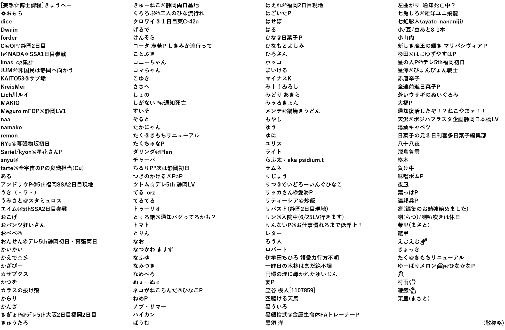

喜多日菜子応援企画みんなで作るむふふの日
「みんなで作るむふふの日」とは、日菜子の口癖（？）でもある「むふふ」のごろ合わせである6月22日に日菜子のスクリーンショットを集めてモザイクアートを作る企画です。
Tweet[夢見るプリンセス]喜多日菜子+
![モザイクアート「[夢見るプリンセス]喜多日菜子+](./mufufu-tile-large.jpg)
画像クリックで高画質画像が開きます（9MByte）
「みんなで作るむふふの日」とは、日菜子の口癖（？）でもある「むふふ」のごろ合わせである6月22日に日菜子のスクリーンショットを集めてモザイクアートを作る企画です。
Tweet
画像クリックで高画質画像が開きます（9MByte）
期間中、153名から合計1,623枚もの画像を投稿いただきました。
企画に賛同し、画像を投稿いただいた皆様、またRT/Favを通して応援してくださった皆様、ありがとうございます。
